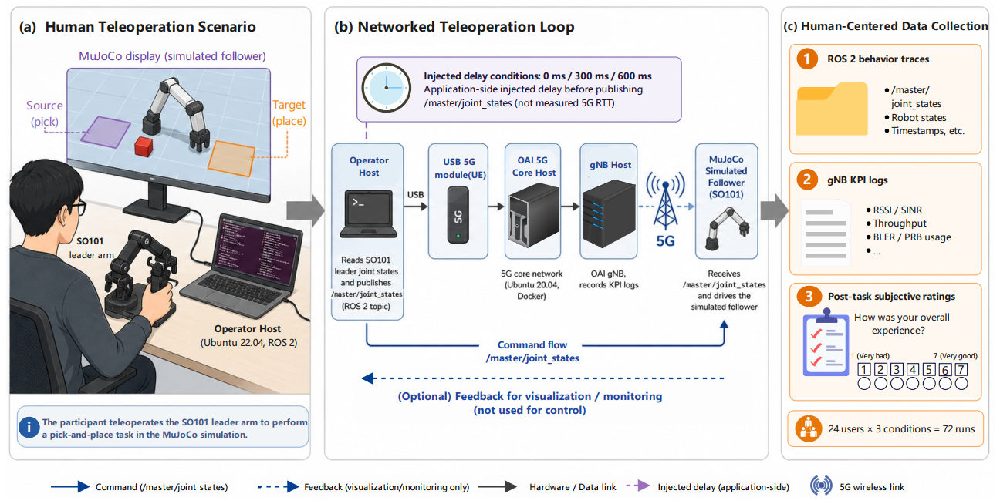
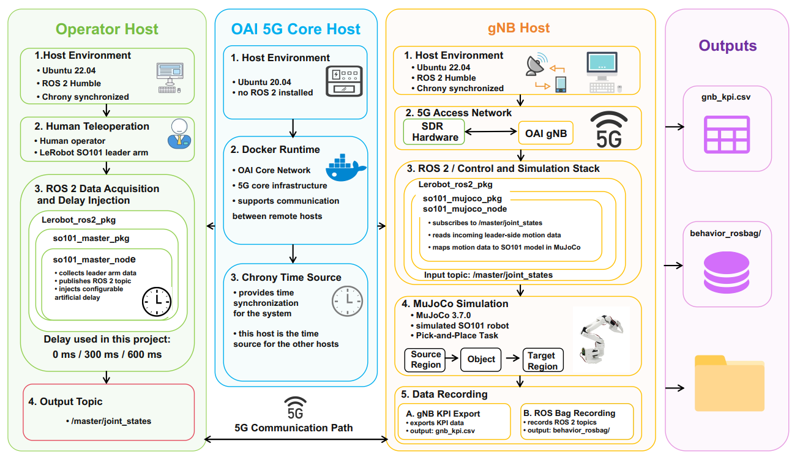
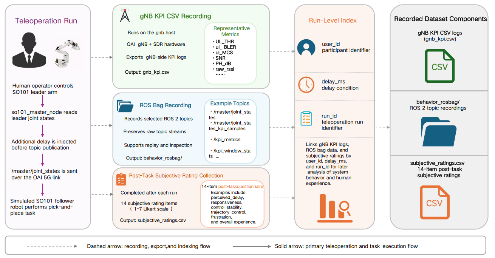

Overview

Networked robotic teleoperation is increasingly important for applications such as remote manipulation, assistive robotics, hazardous-environment operation, and cloud/edge robotic control. However, existing teleoperation platforms and datasets often study robot behavior, network conditions, and human subjective perception separately, making it difficult to analyze how communication impairments affect human-in-the-loop robotic performance. We present TeleHum, an open-source, network-instrumented platform and run-level dataset for human-centered robotic teleoperation. The platform integrates a LeRobot SO101 leader arm, ROS 2, a custom-modified 5G testbed, MuJoCo simulation, gNB-side KPI logging, ROS bag recording, and post-task subjective ratings. The dataset contains 72 runs from 24 users teleoperating a MuJoCo pick-and-place task over a real 5G network, with additional application-side injected delays of 0 ms, 300 ms, and 600 ms. Each run is associated with synchronized 5G network-side logs, ROS 2 behavior traces, metadata, and custom 14-item post-task subjective ratings. In total, TeleHum includes 9.72 million KPI rows with 52 columns, 615,236 ROS bag messages across all topics, and 1,008 subjective questionnaire responses, with 100% run-level completeness across all expected KPI files and ROS bag metadata. These data enable concrete analyses such as quantifying delay-induced degradation in task performance, correlating gNB-side wireless KPIs with robot motion behavior, comparing user-perceived workload and control quality under different delay conditions, and developing network-aware teleoperation policies or adaptive control strategies. We release the complete platform implementation and dataset, including code, hardware deployment instructions, and data-processing workflows, to support future research on human-centered networked robotic teleoperation at https://telehum.github.io.
Use the tabs or arrows to browse the project narrative. The carousel advances automatically every 10 seconds.






A demonstration of the TeleHum data collection procedure and human-in-the-loop teleoperation setup.
The recorded collection process shows the operator-side leader-arm control, networked teleoperation loop, and run-level data collection workflow used by TeleHum.
For anonymous review, the paper is not uploaded to arXiv. This placeholder is reserved for a future public version after the review process.
@misc{telehum2026anonymous,
title = {TeleHum: An Open-Source Platform and Dataset for Human-Centered Networked Robotic Teleoperation},
author = {Anonymous Authors},
year = {2026},
note = {Anonymous submission}
}